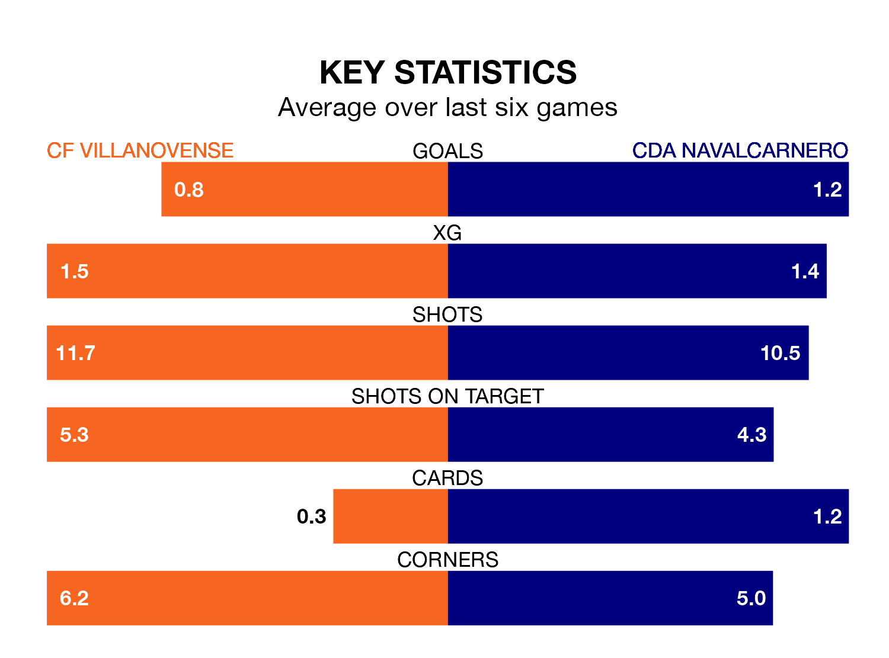

CF Villanovense host CDA Navalcarnero on Sunday at the Estadio Municipal Villanovense in the Segunda División RFEF Group 5.
In their last league match, on March 3, Villanovense lost to CD Numancia 1-0 away.
CDA Navalcarnero drew, 0-0 away at CD Badajoz.
CDA Navalcarnero are 16th in the table after 25 games, of which they have won five and drawn 10, earning 25 points.
Villanovense are eight places ahead of the away side in eighth, with 10 wins and five draws putting them on 35 points.
With 22 goals in 25 games so far this season, CDA Navalcarnero are scoring at below the league average rate with 0.9 goals per game. And they are conceding more than average, letting in 30 goals at a rate of 1.2 per game.
The hosts are also below average scorers, with 1.0 goal per game, compared to a league average of 1.1. They have conceded 0.9 goals per game.
In the last five years, Villanovense and CDA Navalcarnero have played each other on four occasions. They won two each.
On average, Villanovense scored 1.0 goal and CDA Navalcarnero 0.8 in those matches.
Their last meeting was on October 29, when Villanovense won 2-0 away.
Villanovense are in mixed form in the Segunda División RFEF Group 5, with three wins and three losses from their last six games.
With two wins and three draws over that period, CDA Navalcarnero's form is similar – they have both taken nine points from 18.
Updated: 09:34 (UTC), 08/03/24